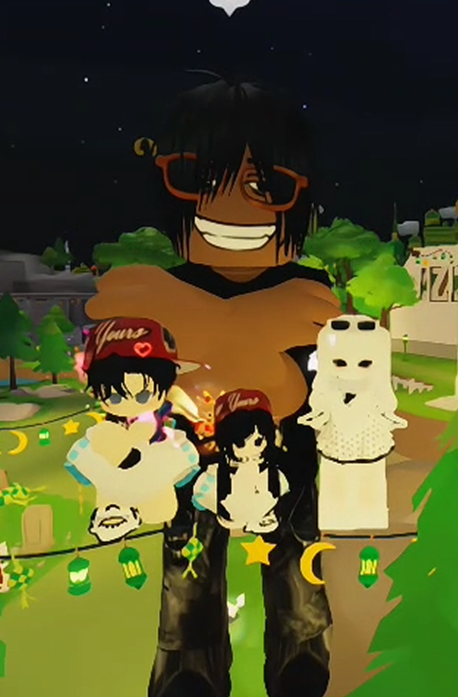
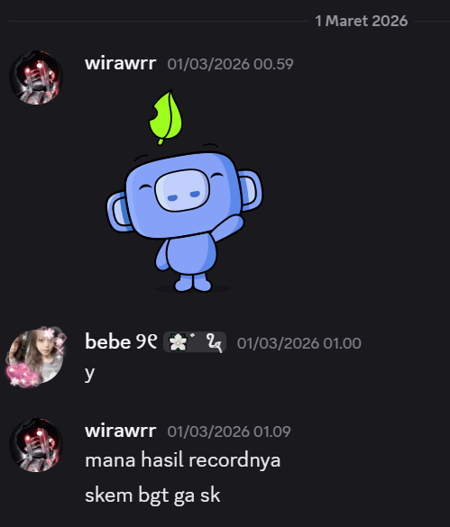

Tempat kecil yang aku buat khusus untuk kamu, isi dari chat, foto, video, late night moments, dan semua little memories yang diam-diam punya tempat spesial hehe
Little snapshots of us — the moments that flutter in my memory.
The Day We Met
It was just a quiet day at first, tapi semuanya terasa lebih warm sejak aku ketemu kamu di server. Aku bener-bener enjoy every moment mulai dari chat, ketawa bareng, sampai ngobrol di voice. Somehow, even the simplest conversations sama kamu bisa bikin semuanya terasa lebih soft and a little more special


Our First Memory
Waktu kamu ngajak aku nonton di voice hari itu, aku diam-diam berharap semoga itu jadi momen yang cuma kita berdua. Even though ada orang lain juga, di hati kecilku aku tetap pengen ada saat di mana dunia terasa sepi dan yang ada cuma aku sama kamu. but that moment meant so much more than words could ever explain.
Moments I'll Never Forget
The first time you sent me your pap, something about that moment stayed with me. Itu pertama kalinya aku dapet foto secantik itu langsung dari kamu, and it felt strangely precious in a way I can’t fully explain. Lalu waktu kita bikin Spotify collab album bareng, itu juga jadi another first for me dan aku suka gimana hal-hal kecil sama kamu selalu terasa lebih special dari yang seharusnya. Somehow, little moments like these keep finding their own place in my heart.
Words that always seem to find their way back to you.
Aku nggak pernah nyangka kalau satu orang bisa bikin hari yang biasa aja terasa jauh lebih warm, but somehow, kamu bisa lakuin itu dengan natural banget. Sejak pertama kali aku ketemu kamu di server, semuanya rasanya jadi lebih menyenangkan, lebih nyaman, dan entah kenapa lebih special.
Every moment sama kamu, whether it’s texting, ketawa bareng, ngobrol di voice, atau cuma sharing hal-hal random, selalu terasa meaningful buat aku. Bahkan hal-hal kecil yang mungkin kelihatannya biasa aja pun somehow selalu ninggalin kesan yang susah dijelasin.
Salah satu momen yang paling aku simpan tentu aja waktu kamu kirim pap ke aku untuk pertama kalinya. I don’t know why, but it felt really special. Itu juga pertama kalinya aku dapet foto secantik itu langsung dari kamu, and honestly, it made my heart feel so full.
Terus waktu kita bikin Spotify collab album, that was also my first experience, dan aku nggak nyangka hal sesimple itu bisa jadi salah satu memory yang diam-diam berarti banget buat aku.
Thank you for being part of all these little moments, buat semua tawa, obrolan, dan kehadiran kamu yang pelan-pelan bikin semuanya terasa lebih indah. Aku harap kamu tahu kalau every memory, every feeling, and every little moment we shared, punya tempat yang sangat special.
A gentle question, after all the little moments we shared.
So, Aleshya... Will You Be Mine?
Aku tahu ini mungkin terdengar tiba-tiba, but honestly, having you around feels so right. I want to keep experiencing all of those with you. So... will you let me be yours?
.png)
.png)